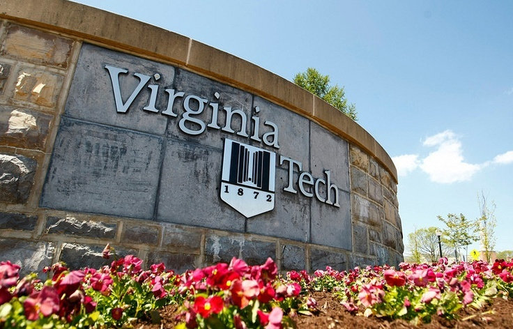

My Semester at Virginia Tech
My fall 2018 semester has been my most academically successful and fulfilling thus far. This semester, I am taking classes I feel are integral to my future in the Public Relations field, and I am learning new things that will be helpful. My visual media class has taught me different Adobe sfotwares, which are useful for every day life. My marketing management class is a great introduction into the world of marketing, which I am focusing on for my Cognate. Public Relations Cases has given me real world examples of PR activities through case studies, enlightening me on how PR works. Finally, Writing and Editing for PR has especially been helpful, as it has not only refined my resume and other documents, but has taught me how to write multiple PR documents that I will need to know for my future.
